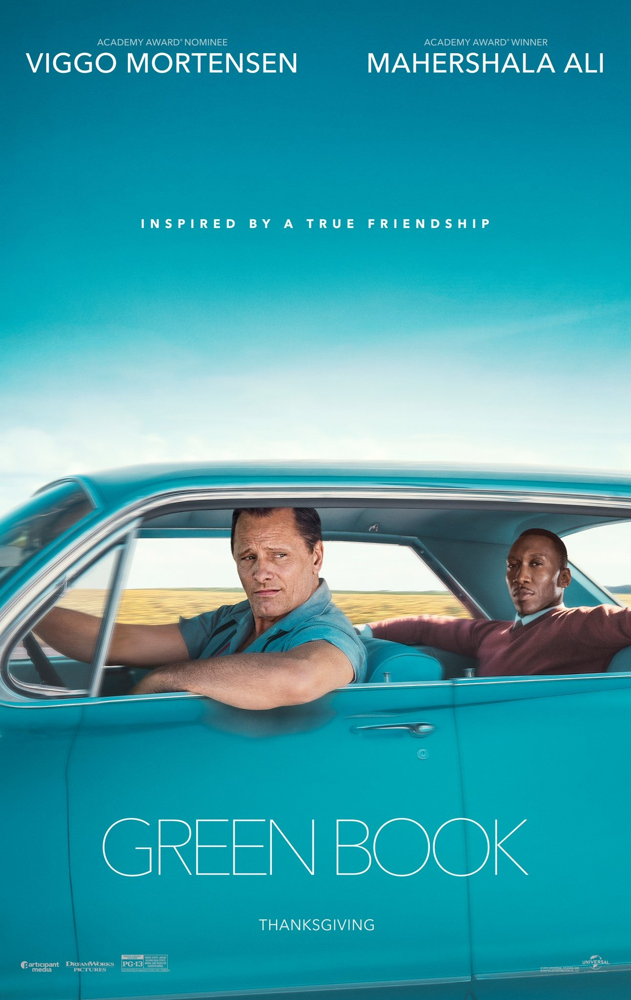

绿皮书（Green Book，2018）
一句话短评：
内容简介：
- 托尼（维果·莫腾森 Viggo Mortensen 饰）是一个吊儿郎当游手好闲的混混，在一家夜总会做侍者。这间夜总会因故要停业几个月，可托尼所要支付的房租和生活费不会因此取消，所以他的当务之急是去寻找另一份工作来填补这几个月的空缺。在这个节骨眼上，一位名叫唐雪莉（马赫沙拉·阿里 Mahershala Ali 饰）的黑人钢琴家提出雇佣托尼。
- 唐雪莉即将开始为期八个星期的南下巡回演出，可是，那个时候南方对黑人的歧视非常的严重，于是托尼便成为了唐雪莉的司机兼保镖。一路上，两人迥异的性格使得他们之间产生了很多的矛盾，与此同时，唐雪莉在南方所遭受的种种不公平的对待也让托尼对种族歧视感到深恶痛绝。
短评：
- 1.肤色、阶层、性格和性取向天差地远的两个男人，因为音乐而结缘，因为公路旅行而成为一生朋友。有时候才华并不够，还需要勇敢，推倒心中那面墙才能开门见山。电影就像一颗绿色小石子，投入黑白分明的美国社会，激起轻小而美丽的涟漪。虽然有刻意营造的温暖感，但我就是愿意买单~！ ——同志亦凡人
- 2.让人印象最深的片段是他们的车在南部的乡间小路上抛锚，和田里劳作的黑奴对视的那一幕，无声却发出巨响。 ——陈大希
可播放资源：
- 哔哩哔哩 VIP免费观看
- https://www.bilibili.com/bangumi/play/ss33615?bsource=douban